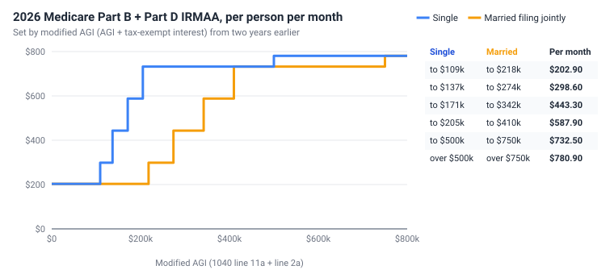
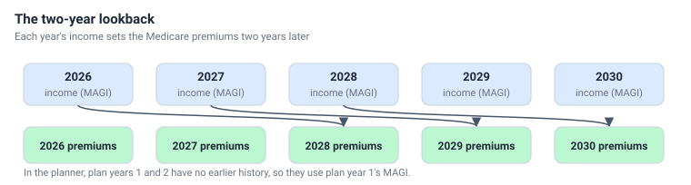

Medicare and IRMAA
From age 65 the planner adds Medicare premiums for each tax payer. Most people pay the standard Part B premium, but higher incomes pay an extra amount called IRMAA - and it is based on your income from two years earlier.
What the planner pays
- For each tax payer 65 or older and alive that year: the monthly Part B premium plus any Part D IRMAA surcharge, times 12.
- The standard premium in 2026 is $202.90 a month ($2,435 a year) per person.
- Premiums rise every year with the Medicare premium inflation rate (5% to start) from plan year 1.
- The premium is paid by Auto in the year it is for, together with last year's taxes, and shows as Medicare Premiums in the results.
The planner does not include Part D plan premiums, Medigap or Medicare Advantage premiums, or out-of-pocket costs - add those as living expenses.
IRMAA: income-related premiums

The Income-Related Monthly Adjustment Amount (IRMAA) raises your Medicare premium in steps as your income crosses each threshold. At the top it reaches $780.90 a month per person. These are cliffs: one dollar over a threshold raises the premium for the whole year, for each person on Medicare. The thresholds rise with the tax forms inflation rate each year.
MAGI: the income that counts
IRMAA uses modified adjusted gross income: your AGI (Form 1040 line 11a) plus tax-exempt interest (line 2a). The planner shows it in the extra box 11a.1 of the Annual Tax Forms.
Everything in AGI counts: IRA withdrawals and RMDs, Roth conversions, capital gains from selling investments, and the taxable part of Social Security. Withdrawals from a Roth do not.
The two-year lookback

Social Security uses the most recent tax return it has - from two years earlier - so your 2028 premiums depend on your 2026 income. The tier is chosen using that year's filing status and the thresholds adjusted for inflation to the premium year. In the planner, plan years 1 and 2 have no earlier history and use plan year 1's MAGI.
In real life, you can ask Social Security to use a more recent year after a life-changing event such as retirement (form SSA-44). The planner always uses the two-year lookback.